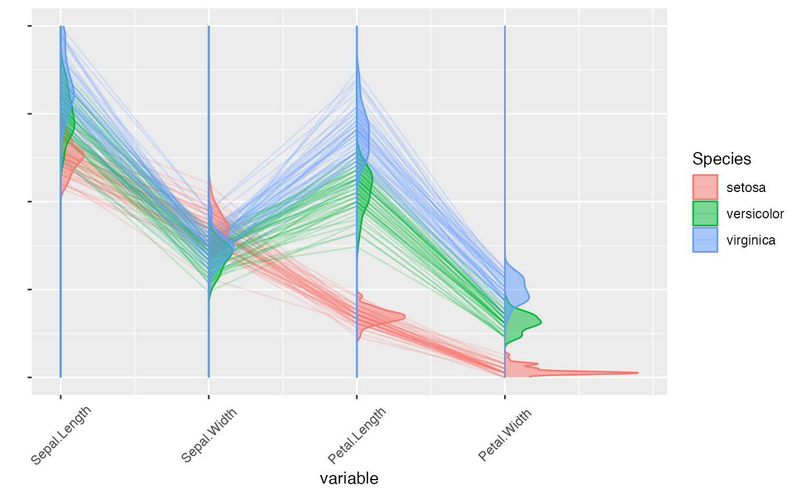

geom_serialaxes_density.RdComputes and draws kernel density estimates on serial axes coordinate
for each non-aesthetics component defined in the mapping aes().
geom_serialaxes_density(
mapping = NULL,
data = NULL,
stat = "serialaxes_density",
position = "identity_",
...,
axes.sequence = character(0L),
merge = TRUE,
scale.y = c("data", "group"),
as.mix = TRUE,
positive = TRUE,
prop = 0.9,
na.rm = FALSE,
orientation = NA,
show.legend = NA,
inherit.aes = TRUE
)
stat_serialaxes_density(
mapping = NULL,
data = NULL,
geom = "serialaxes_density",
position = "stack_",
...,
axes.sequence = character(0L),
merge = TRUE,
axes.position = NULL,
scaling = c("data", "variable", "observation", "none"),
bw = "nrd0",
adjust = 1,
kernel = "gaussian",
n = 512,
trim = FALSE,
na.rm = FALSE,
orientation = NA,
show.legend = NA,
inherit.aes = TRUE
)Set of aesthetic mappings created by aes() or
aes_(). If specified and inherit.aes = TRUE (the
default), it is combined with the default mapping at the top level of the
plot. You must supply mapping if there is no plot mapping.
The data to be displayed in this layer. There are three options:
If NULL, the default, the data is inherited from the plot
data as specified in the call to ggplot().
A data.frame, or other object, will override the plot
data. All objects will be fortified to produce a data frame. See
fortify() for which variables will be created.
A function will be called with a single argument,
the plot data. The return value must be a data.frame, and
will be used as the layer data. A function can be created
from a formula (e.g. ~ head(.x, 10)).
The statistical transformation to use on the data for this layer, as a string.
Position adjustment, either as a string, or the result of a call to a position adjustment function.
Other arguments passed on to layer(). These are
often aesthetics, used to set an aesthetic to a fixed value, like
colour = "red" or size = 3. They may also be parameters
to the paired geom/stat.
A vector to define the axes sequence. In serial axes coordinate, the sequence can be either
determined in mapping (function aes()) or by axes.sequence. The only difference is that
the mapping aesthetics will omit the duplicated axes (check examples in geom_serialaxes).
Should axes.sequence be merged with mapping aesthetics
as a single mapping uneval object?
one of data and group to specify.
| Type | Description |
| data (default) | The density estimates are scaled by the whole data set |
| group | The density estimates are scaled by each group |
If the scale.y is data, it is meaningful to compare the density (shape and area) across all groups; else
it is only meaningful to compare the density within each group. See details.
Logical. Within each group, if TRUE, the sum of the density estimate area is mixed and
scaled to maximum 1. The area of each subgroup (in general, within each group one color represents one subgroup)
is proportional to the count; if FALSE the area of each subgroup is the same, with maximum 1. See details.
If y is set as the density estimate, where the smoothed curved is faced to,
right (`positive`) or left (`negative`) as vertical layout; up (`positive`) or down (`negative`) as horizontal layout?
adjust the proportional maximum height of the estimate (density, histogram, ...).
If FALSE, the default, missing values are removed with
a warning. If TRUE, missing values are silently removed.
The orientation of the layer. The default (NA)
automatically determines the orientation from the aesthetic mapping. In the
rare event that this fails it can be given explicitly by setting orientation
to either "x" or "y". See the Orientation section for more detail.
logical. Should this layer be included in the legends?
NA, the default, includes if any aesthetics are mapped.
FALSE never includes, and TRUE always includes.
It can also be a named logical vector to finely select the aesthetics to
display.
If FALSE, overrides the default aesthetics,
rather than combining with them. This is most useful for helper functions
that define both data and aesthetics and shouldn't inherit behaviour from
the default plot specification, e.g. borders().
The geometric object to use display the data
A numerical vector to determine the axes sequence position;
the length should be the same with the length of axes.sequence (or mapping aesthetics, see examples).
one of data, variable, observation or
none (not suggested the layout is the same with data)
to specify how the data is scaled.
The smoothing bandwidth to be used.
If numeric, the standard deviation of the smoothing kernel.
If character, a rule to choose the bandwidth, as listed in
stats::bw.nrd().
A multiplicate bandwidth adjustment. This makes it possible
to adjust the bandwidth while still using the a bandwidth estimator.
For example, adjust = 1/2 means use half of the default bandwidth.
Kernel. See list of available kernels in density().
number of equally spaced points at which the density is to be
estimated, should be a power of two, see density() for
details
If FALSE, the default, each density is computed on the
full range of the data. If TRUE, each density is computed over the
range of that group: this typically means the estimated x values will
not line-up, and hence you won't be able to stack density values.
This parameter only matters if you are displaying multiple densities in
one plot or if you are manually adjusting the scale limits.
p <- ggplot(iris, mapping = aes(Sepal.Length = Sepal.Length,
Sepal.Width = Sepal.Width,
Petal.Length = Petal.Length,
Petal.Width = Petal.Width,
colour = Species,
fill = Species)) +
geom_serialaxes(alpha = 0.2) +
geom_serialaxes_density(alpha = 0.5) +
scale_x_continuous(breaks = 1:4,
labels = colnames(iris)[-5]) +
scale_y_continuous(labels = NULL) +
xlab("variable") +
ylab("") +
theme(axis.text.x = element_text(angle = 45, vjust = 0.5))
p
